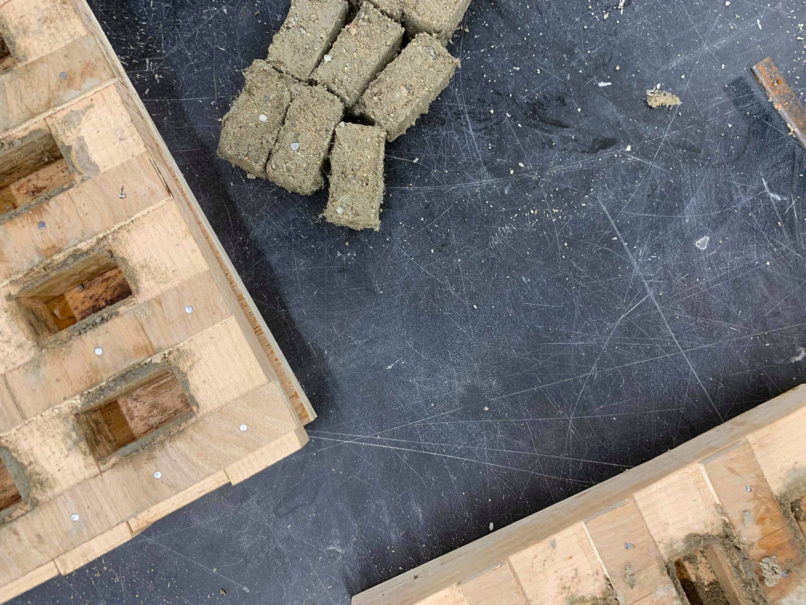

Creating Composite Blocks Using Debris Material
How can reconstruction post-natural disaster become
more sustainable?
The majority of debris material are sent to landfills
following a natural disaster. But this is an inefficient choice
because much of the debris material can be recycled to
create new building material.
The scope of the project revolved around designing a method to aid in sustainable reconstruction. Much of the debris
post-natural disaster are sent to landfills and this is both inefficient and unsustainable. But debris on the ground can
be recycled. Recycling debris lessens the need for the use of new raw material. The design our team developed
involved a variation of one of the most common building materials in the world; concrete blocks. But instead of using
new concrete, our team worked to find ways to incorporate debris material creating a composite block. The block
consists of recycled wood, plastic, and concrete. We developed eight recipes that used varying amounts of each
aggregate to determine which composite brick would be the most comparable to conventional blocks.
After developing eight distinct recipes, our team spent hours in the concrete lab executing these recipes and
physically creating the different composite bricks. Our experiment followed the principles of a factorial
experiment. This allows us to compare variables against each other to understand which variable is producing
what type of results. In the chart above, cement and sand are new materials because they cannot be collected
from ground debris. We then change the percentage of wood, plastic, recycled concrete, and water/cement ratio
to determine which combination of percentages results in the most ideal building block.
The final step in this process was to test our final product. We returned to where we did our initial observation and
asked students to test out our portable lap desk. The biggest feedback that we desired was concerning the sliding
mechanism. This is what justifies the two piece design as opposed to already existing lap desks. In addition to testing
the sliding mechanism, we wanted to make sure that the maximum weight of items the desk could withstand was an
appropriate number. This design was completely user-driven from beginning to end. To see users testing our design
and seeing needs being met was a rewarding step in the process.